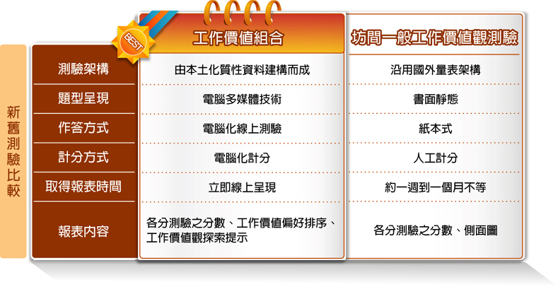

-
- 什麼是工作價值組合?
- 工作價值組合 (work value assembly) 是用來測量個人對於跟工作有關之價值觀的測量工具，多用在學生自我探索、生涯抉擇或企業篩選人才等。 工作價值觀是指個人希望從工作中得到滿足的需求信念，而這些期待亦是幫助個人積極達到正向工作成果的動力。 價值的本身是構成態度和行為的基本元素，在人的行為上扮演了影響知覺、態度和抉擇的重要角色。 在工作層面上，工作價值觀也是幫助我們衡量工作意義或是解釋我們為何工作的主要依據。 然而，現有之工作價值觀測驗的施測方式為紙本式測驗，計分方面需透過人力或是讀卡機制，操作起來曠日費時，在時間效率上較為不佳。 因此，此測驗運用多媒體和計量技術編製「工作價值組合」，透過電腦測量學生多面向之工作價值觀。 藉由本測驗，幫助青少年瞭解自身工作價值觀，將有助於他們作自我的探索，進而培養生涯決策與規劃的能力。 適當的生涯發展測驗將能提供多元訊息，以作為青少年生涯決策之參考資訊，以及教師與家長進行生涯輔導之工具。

-
- 本測驗的特色與優勢
- 一、電腦化測驗
相較於紙筆式測驗，電腦化測驗較能夠吸引學生的注意力，提高作答意願，也能夠使測驗的結果更為正確有效。利用電腦化的資訊和多媒體技術發展測驗，能夠更真實地測量學生的價值觀。
二、貼切的本土價值觀內涵
這個測驗裡所包含的價值類型是藉由多次深度焦點訪談，及開放性問卷所歸納、編制而成，是符合台灣本土及現代人的最新工作價值觀內涵。
三、質與量並重的編製過程
透過質性研究取得有關國人工作價值觀的資料，經過嚴謹的編寫、審閱、修改、潤飾等過程，並且以量化的方式收集實際的資料，並且持續地修改和精進題目， 獲致的題目內容不但能夠深刻的描繪出工作價值觀的內涵，在心裡計量特性上也取得了有力的佐證，因此本量表具有質量並重的優點。
四、快速獲得測驗結果
透過測驗系統，學生能在最短的時間得到測驗結果，學校教師能於線上系統直接印製測驗報告，縮短獲得報表的等待時間，提高量表結果使用的效率。
五、提供職涯相關測驗
除了本測驗之外，本系統尚有情境式職涯興趣測驗以及性向測驗，可提供不同面向之評量，藉此讓學生了解工作價值觀與興趣、性向之間的關係， 作為學生進行生涯抉擇之參考資訊，也提供學校教師和家長，能做更適切之輔導或建議。
-
- 信、效度
- 一、信度研究
本測驗以民國101年就讀高中職一到三年級的學生作為樣本，取樣自台北市與新北市的學校，共計753人的測驗資料進行信度研究。 有關內部一致性的信度證據，Chronbach’s alpha係數介於.80到.92，中位數.85。進一步採用較為嚴謹的驗證性因素分析， 分別計算七個向度的建構信度(Construct Reliability)，結果發現介於.84到.92，中位數.85。 針對再測信度的部分對116位受試者做了間隔兩周的再測，結果發現再測信度介於.68到.85之間，全量表的再測信度為.86， 全部皆達顯著水準，整體而言本測驗能夠提供高度可信的測量。
二、效度研究
以高中職一到三年級的學生，共753名學生為樣本，採用較為嚴謹的驗證性因素分析，分別計算七個向度的聚歛效度(Convergent validity)， 結果發現於.45至.65之間，中位數.57，過去研究指出聚歛效度在.5以上即代表題目能夠較為有效的測量潛在構念， 除專業成長與自我實現兩個向度稍微低於.5以外，整題而言本測驗的效度具有令人滿意的水準。